Making fact-checking clear enough to trust
Logically set out to fight misinformation, but its consumer app asked people to trust a fact-checking service they couldn’t understand. I researched how people in the UK, US and India decide what to believe, then redesigned the fact-checking experience so it explains itself, shows useful evidence straight away and keeps people informed until their answer arrives.
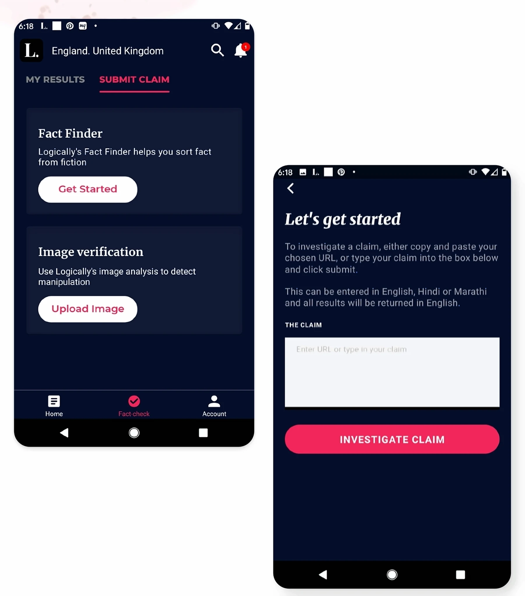
Retention up 10× in a 2.5-month relaunch
The targets were a 5× increase in retention and a 10% rise in NPS, alongside growing the user base in the UK, US and India through Logically’s B2B and B2C products.
Understanding how people assess information
I interviewed people across the UK, US and India and combined what I heard with product analytics, a usability assessment of the existing app and a review of competitors.
A fact-checking journey that explains itself
I redesigned the core journey so people understand the service before they use it, see relevant evidence immediately and know what happens after they submit a claim.
From research to launch in 2.5 months
I ran seven-day design sprints for each of the app’s three main functions, tested the designs with users in London and worked with front-end developers to build them.
A gap between the promise and the experience
Logically wanted its app to be a tool against misinformation. In practice, the fact-checking service left people with more questions than answers, and retention was extremely low. The problems came down to three things:
- People didn’t understand what fact-checking meant.
- They didn’t know what would happen after submitting a claim, or when they would get an answer.
- The product offering was unclear, and so was who it was for.
Underneath all three was a credibility problem. Misinformation is a sensitive subject, and a product that asks people to trust its verification has to explain what it does and why its results are reliable. The original app did neither. The issue wasn’t usability alone: the experience didn’t deliver what the product promised.
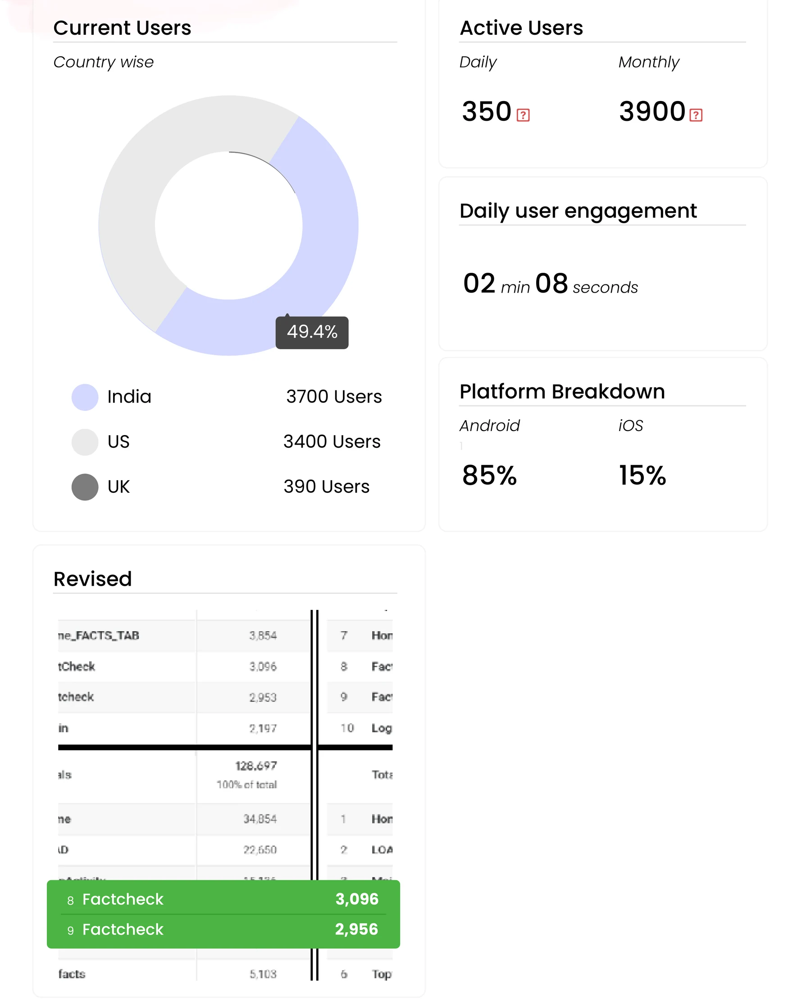
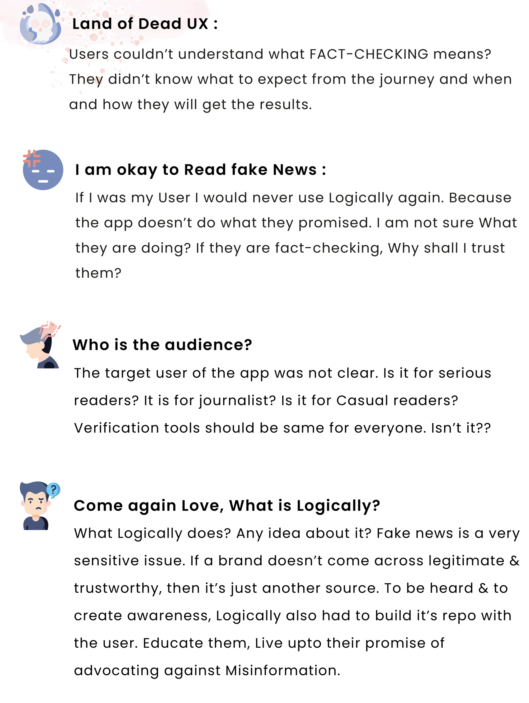
How people decide what to believe
I ran the research during the 2020 lockdowns, interviewing people in the UK, US and India over Zoom and Google Meet. Contextual inquiry showed me how people check information within their own routines, and stakeholder interviews set out the business goals the redesign had to serve.
To see where the existing app was failing, I assessed its usability and user journeys and analysed Google Analytics and internal product data. A competitor analysis showed me how other services handle verification. I brought everything together through affinity mapping and turned the findings into personas.
The interviews focused on the judgements people make every day:
- Telling facts from opinions
- Verifying information and judging its accuracy
- Deciding which news sources to trust
- Recognising bias and political influence
- Understanding what makes information credible and unbiased
- Finding information quickly
- Verifying local news
What I learned fed directly into the redesign, which focuses on making the service transparent, setting clear expectations and giving people useful information at every step.
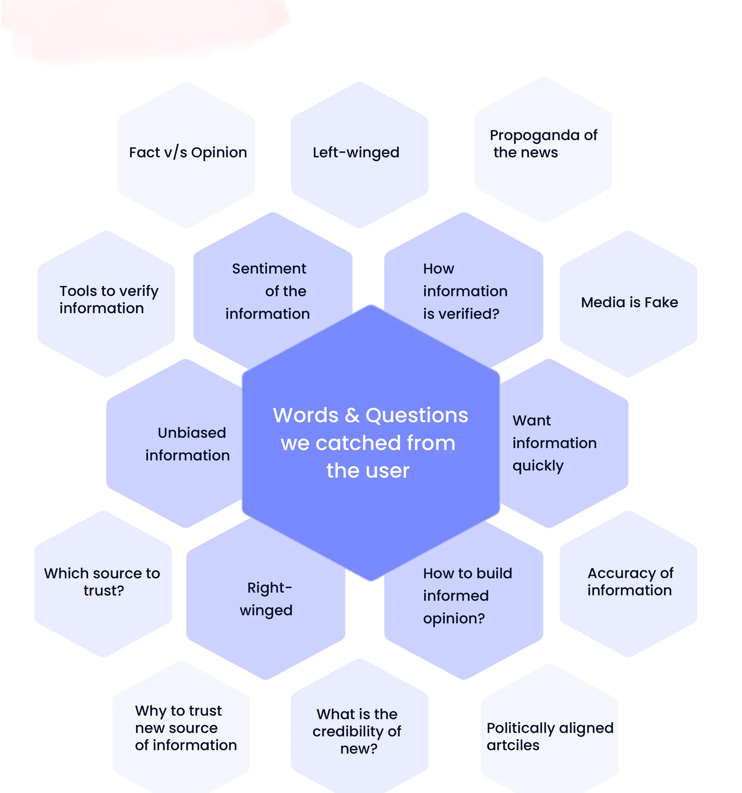
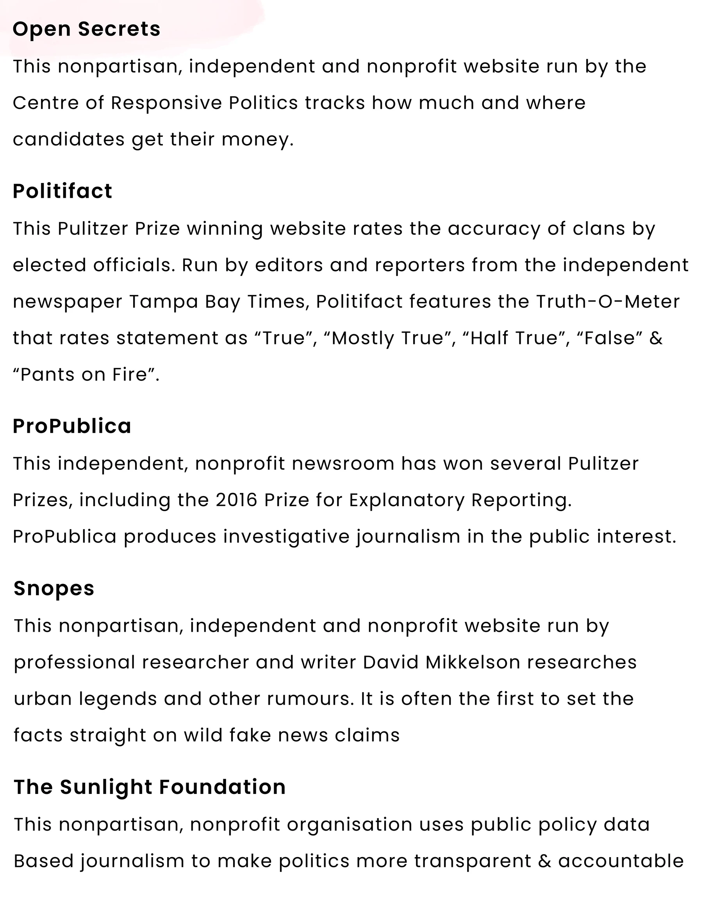
Four questions behind every verdict
I grounded the experience in an information-verification framework that assesses information across four dimensions:
Who created the information and where it originated.
Whether claims are supported by reliable evidence.
Whether the information is presented with bias or prejudice.
Whether the information is current and relevant.
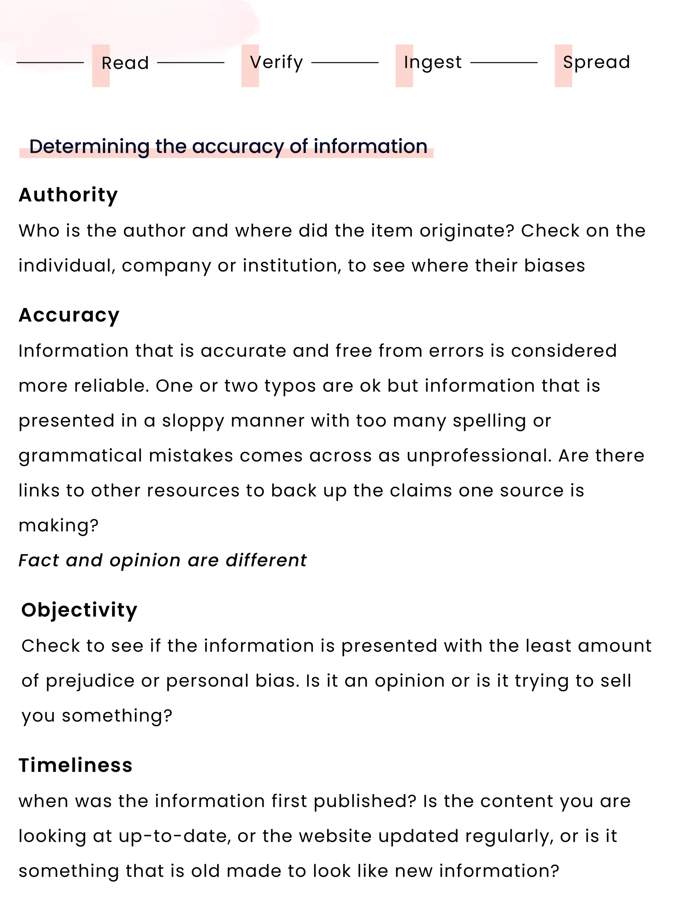
Redesigning the fact-checking journey
In the original app, fact-checking meant finding the right icon, submitting a link and waiting. Once a claim was sent, people had no idea how it would be investigated or when they would hear back.
- Open the app
- Find the fact-checking icon
- Select “Verify your Claim”
- Paste a link
- Choose the closest matching claim
- Submit the claim to the fact-checking team
- Receive a confirmation message
- Learn how the fact-checking service works
- Paste or type a claim
- See related articles, claims and sources
- A loading state while the claim is processed
- Get information that helps you make an informed decision
- Choose: found your answer, or send the claim to the fact-checking team
- Learn what to expect from the service
- Receive real-time updates
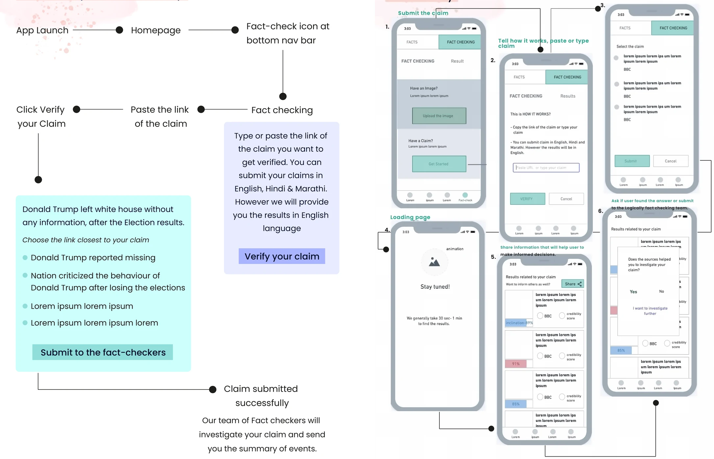
I rebuilt the journey to make the service transparent, set expectations and give people something useful at every step, instead of asking them to submit a claim and wait.
The new journey opens by explaining how the service works, answering the question the original app never did: what fact-checking actually means here. As soon as someone pastes or types a claim, the app shows related articles, claims and sources, so they can start forming an informed view straight away.
Only then does it ask whether they found what they needed or want the fact-checking team to investigate. If they submit the claim, the app explains what to expect and keeps them updated in real time.
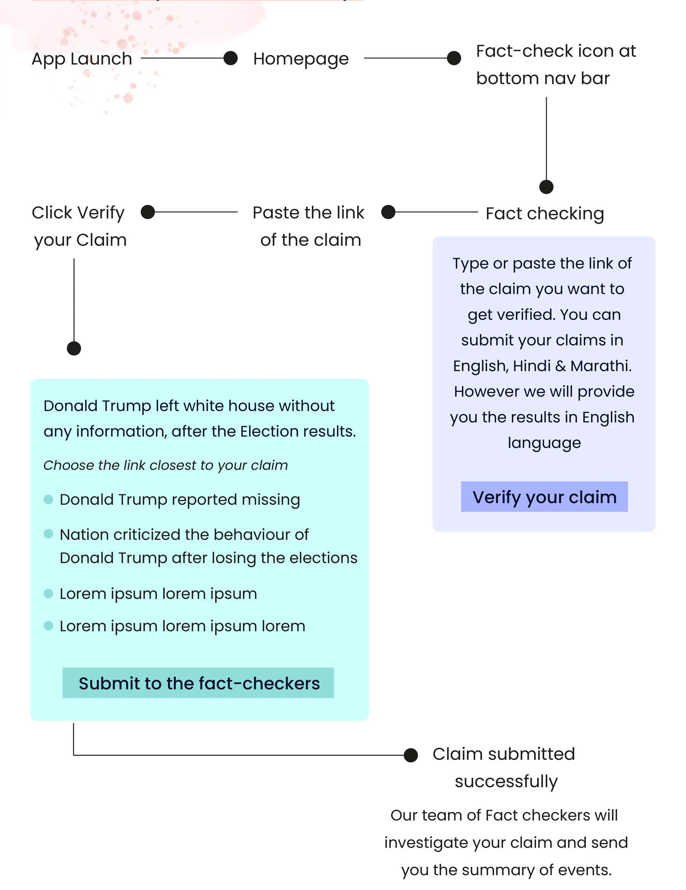
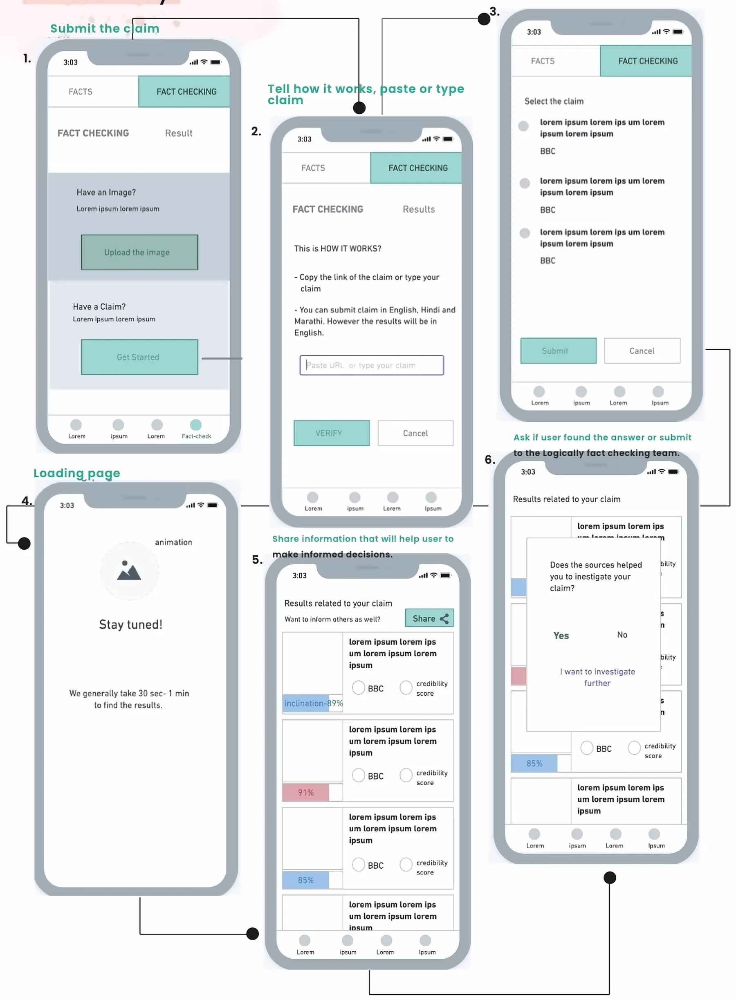
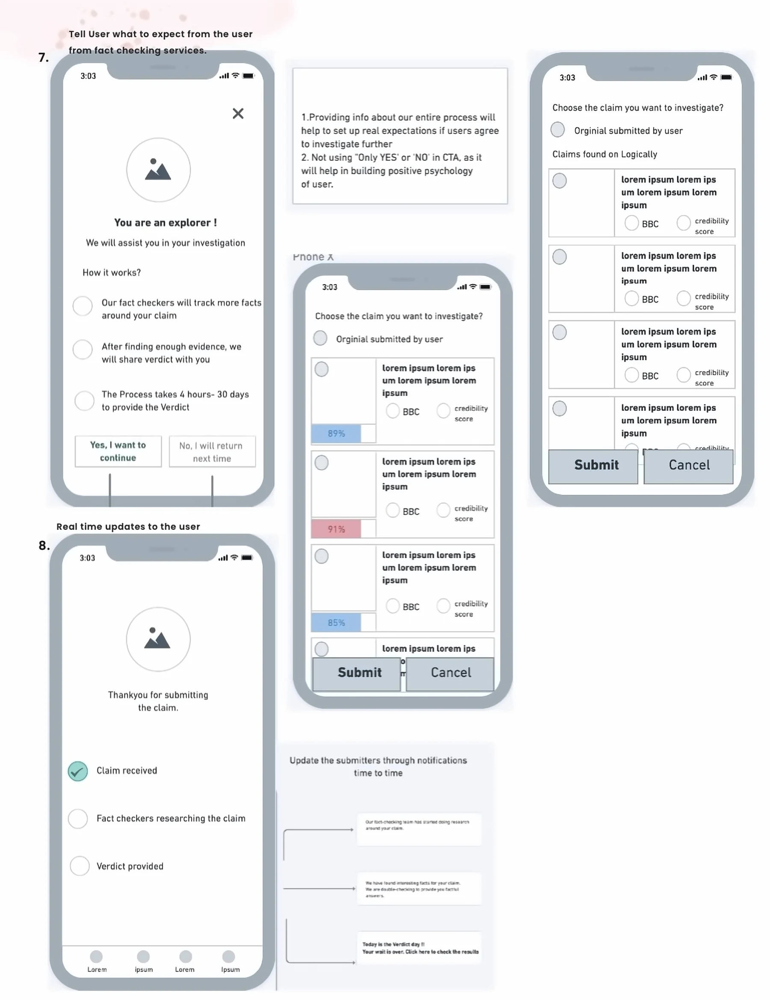
Seven-day sprints, live in 2.5 months
I started by defining the product and UX goals and mapping personas and user journeys, then moved into wireframes and prototypes. The app had three main functions, and I worked through each one in a seven-day design sprint.
I tested the designs with users in London, iterated on their feedback and worked with the front-end developers as they built the screens. The app launched within 2.5 months. This case study focuses on the fact-checking service.
- Goals & journeysProduct and UX goals, personas and user journeys.
- Design sprintsWireframes and prototypes for each of the three main app functions.3 × 7 days
- TestingUser testing in London, then iteration on the feedback.
- Build & launchDesigns developed with the front-end developers and launched.2.5 months in total
The redesigned app
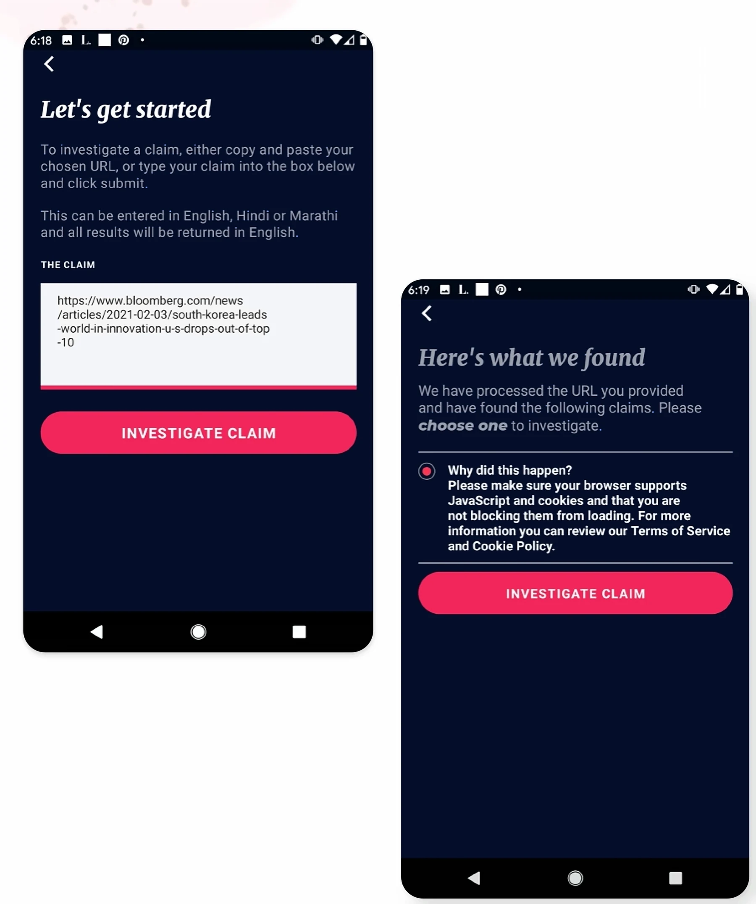
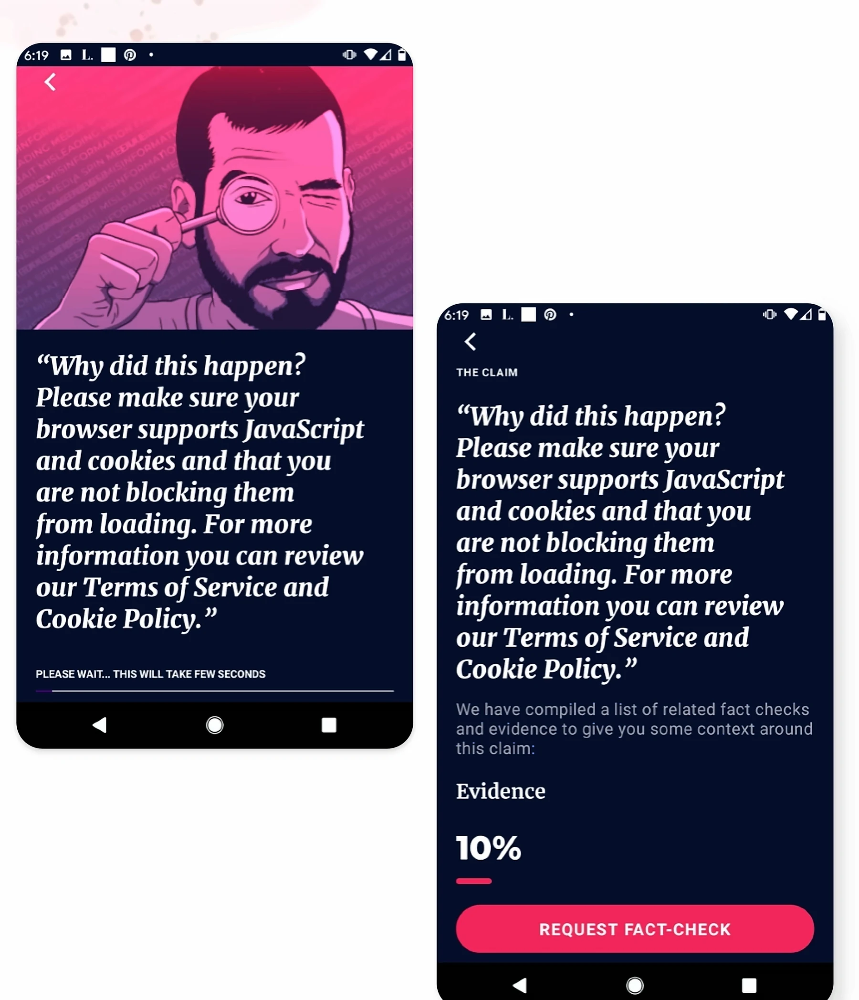
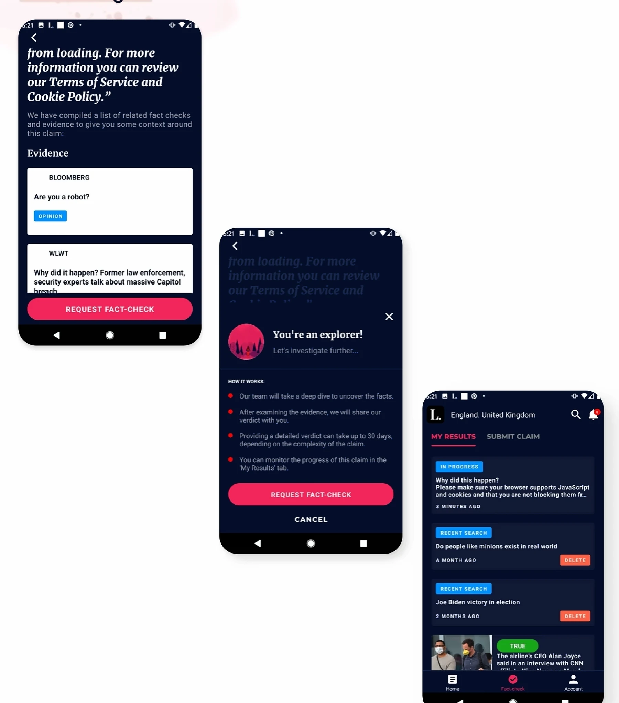
A service people understood, and came back to
Within 2.5 months, the redesigned app was live. Retention rose 10×, double the 5× target. NPS increased by 13% against a 10% target, and organic adoption grew by 18%. By explaining what fact-checking is, showing the evidence up front and keeping people informed, the experience began to match what the product promised.